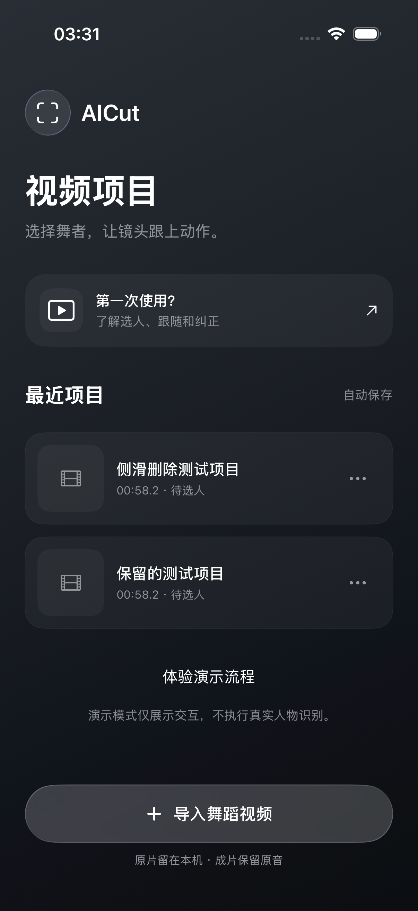
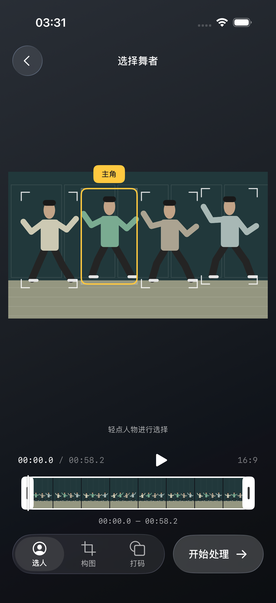
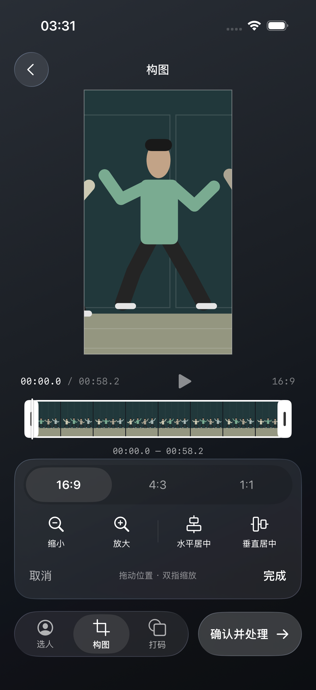
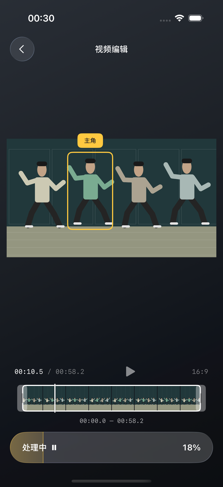
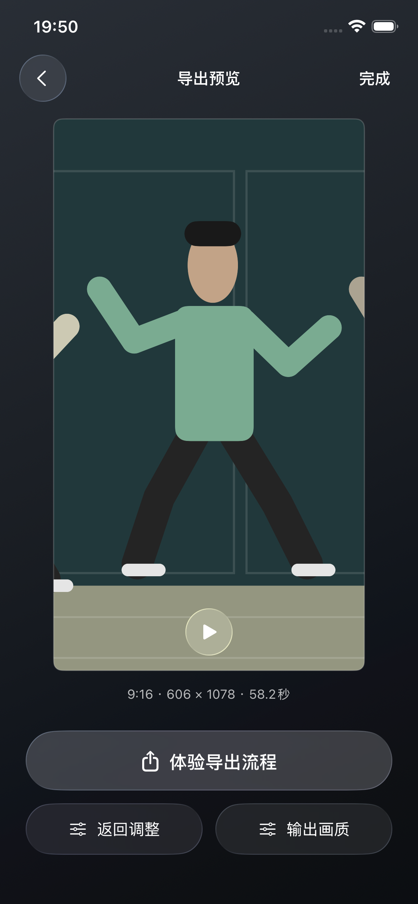
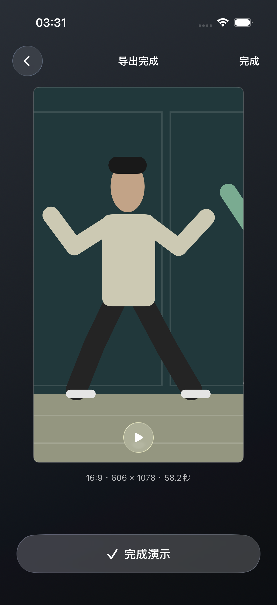
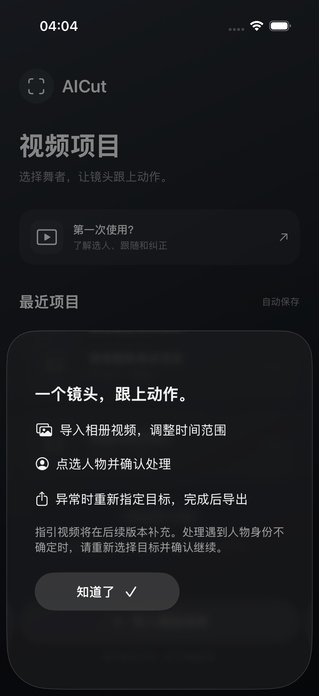
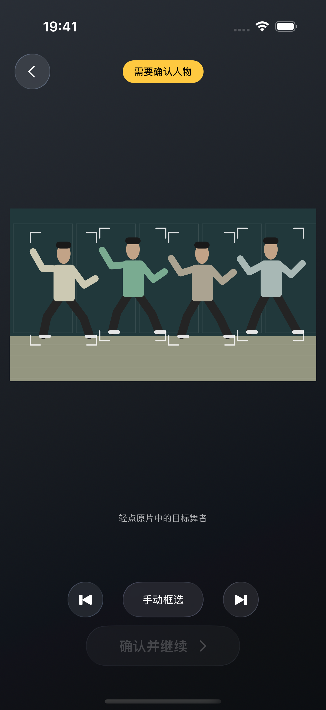
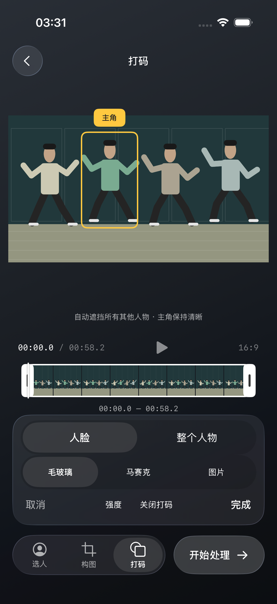
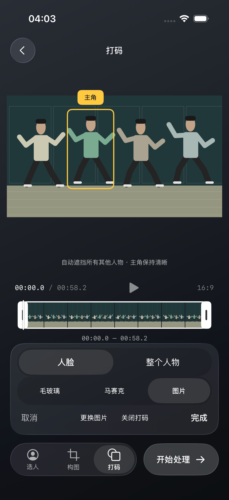

首页 · 全览选人 · 时间轴截取 · 构图 · 打码 · 导出以下为原生应用的模拟人物界面截图。 打码示意 ↗
悬浮导入入口与项目列表

主角标记 · 直接截取

原生玻璃滑动 · 平滑取景 查看示意 ↗

进度填充背景 · 保留百分比

通栏导出 · 等宽次级操作

底部通栏保存 · 次级操作在上

系统半屏呈现

原位重新选择人物

自动遮挡其余人物 · 主角保持清晰

相册选图 · 独立图片遮挡

与构图共用轨迹 · 预览与导出一致
配置改变后生成新成片 · 未改配置复用